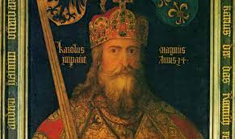

introductie in het christendom
Het christendom is een religie die is gebaseerd op het geloof in de leer van het evangelie, de eerste vier, belangrijkste boeken van het Nieuwe Testament. Het Nieuwe Testament vormt het tweede gedeelte van de Bijbel, het heilige boek van de christenen. Het evangelie beschrijft, gebaseerd op mondelinge overlevering, de onderwijzing, het handelen, de kruisdood en de opstanding uit het graf van Jezus van Nazareth. De daaropvolgende boeken van het Nieuwe Testament, met name de handelingen van de apostelen en de zendingsbrieven, beschrijven Jezus' spirituele erfenis. Het eerste gedeelte van de christelijke Bijbel, het Oude Testament Tenach, wordt door het christendom als voorloper en aankondiging van het tweede en belangrijkste gedeelte, het Nieuwe Testament gezien. Christenen belijden het geloof in één God: het christendom is een monotheïstische godsdienst, net als het jodendom en de islam. Deze drie religies worden samen de abrahamitische godsdiensten genoemd, naar de gezamenlijke aartsvader, Abraham. Specifiek voor het christendom is het geloof dat Jezus de zoon van God is en de messias die voorspeld en aangekondigd werd in het Oude Testament. Het christendom is een wereldgodsdienst. De term christenen voor aanhangers van het christelijk geloof werd voor het eerst gebruikt in Antiochië, en is gebaseerd op het feit dat het geloof in Jezus Christus centraal staat in het christendom.
geloofsinhoud

Volgens de christelijke leer heeft God Zijn eniggeboren Zoon Jezus naar de wereld gezonden om de schuld van de mensheid aan God door de zondeval te verzoenen en de mensen te bevrijden van de zonde. De zondeval betreft de gebeurtenissen in het verhaal in Genesis 3 over de schending van Adam en Eva van Gods verbod van de boom van de kennis van goed en kwaad te eten. Christenen geloven, naar de traditie van het jodendom, in de God van Abraham, Isaak en Jakob, de 'Ik zal zijn die Ik zijn zal' (Exodus 3:14 NBV), de schepper van hemel en aarde, die transcendent en tegelijkertijd immanent is. Verder geloven zij dat de zonde met de zondeval in de wereld is gekomen en dat ieder mens zondig is. Zij geloven ook dat de zonde een scheiding brengt tussen God en de mens, dat de enige manier om weer met God in het reine te komen het geloof is in het 'volbrachte werk van Jezus', zijn lijden en sterven aan het kruis, waarbij hij als de volmaakte mens en Zoon van God de schuld van mensen op zich nam en hen weer met God verzoende. Tot de kern van het christelijke geloof behoort ook het geloof in de lichamelijke opstanding en wedergeboorte van Jezus uit de dood, zijn hemelvaart en zijn terugkomst naar de aarde.
De evangeliëen
Het geheel van de levensverhalen over Jezus wordt ook wel het evangelie genoemd. Velen zien dit daardoor als het essentiële element van het christelijk geloof. Het evangelie bestaat uit de eerste vier Bijbelboeken van het Nieuwe Testament: Marcus, Mattheus, Lucas en Johannes. Dit zijn vier biografieën die meestal zijn opgesteld in eenvoudig Grieks, ongeveer tussen het jaar 70 en 110 na Christus. Veel geleerden menen dat de eenvoudige schrijfstijl, grote hoeveelheid overgeschreven manuscripten en sommige (archeologisch) controleerbare feiten erop kunnen duiden dat de evangeliën, afgezien van de geboorteverhalen en wonderen, deels een kern van historische waarheid bevatten. Jezus zei volgens de evangeliën dat het belangrijkste goddelijke gebod is: Heb God lief boven alles en uw naaste (de medemens) als uzelf. Een belangrijke boodschap is dan ook het helpen van de medemens, het klaarstaan voor elkaar en het niet veroordelen van anderen om hun opvattingen, gedrag of uiterlijk.
verschillen tussen stromingen
Rooms-Katholieke visie
De Rooms-Katholieke Kerk legt de nadruk niet alleen op het gezag van de Bijbel als woord van God, maar ook op de traditie. De Kerk speelt een heilsbemiddelende rol tussen God en mens. Het gebod van eenheid in het geloof vindt binnen het katholicisme uitdrukking in de taak van de hiërarchie. Met de hierachie wordt het vaticaan bedoeld dat eeuwen lang deze traditie aanhoudt.
Protestantse visie
De protestants-christelijke traditie benadrukt drie kernwaarden: Sola gratia (alleen door genade (van God)), Sola fide (alleen door geloof, rechtvaardiging van de mens door geloof alleen en niet door goede 'werken der wet') en Sola scriptura (alleen de Schrift, alleen het woord van God (de Bijbel)) als gezaghebbend. In de protestantse kerken bestaat geen equivalent van de paus als teken van eenheid. De rol van kerkelijke ambtsdragers is verkondigend en pastoraal, maar niet sacramenteel. Ook het belang dat gehecht wordt aan en de theologische invulling van de sacramenten is bij het protestantisme anders dan bij de rooms-katholieke kerk. Een voorbeeld is de katholieke en oosters-orthodoxe eucharistie tegenover het protestantse Heilig Avondmaal.
De geschiedenis van het christendom
Wetenschappelijk-historische visie op het begin van het christendom
De geschiedenis van het christendom begint, volgens de Bijbel en naar de mening van christenen, in Palestina in de dagen van Jezus van Nazareth. In wetenschappelijk-historische zin “treden de christenen de grote geschiedenis binnen” met de vermeldingen door Plinius, Tacitus en Suetonius in de jaren 110-120 na Chr.
Het begin van het christendom in Palestina
De directe aanleiding tot de verspreiding van het christendom vormt het geloof van de volgelingen van Jezus van Nazareth. Jezus zou de door God beloofde Messias zijn. Na Jezus opstanding uit de dood en zijn hemelvaart zou dit geloof aan de gehele mensheid gepredikt moeten worden. Hiertoe ondernamen de volgelingen in Judea, Samaria en Galilea en later ook daarbuiten allerlei evangelisatie- en zendingsreizen teneinde deze blijde boodschap evangelie te verkondigen. Aanvankelijk was het christendom slechts een van de vele religies uit het Oosten die een alternatief boden voor de eeuwenoude Grieks-Romeinse godheden. Maar in de strijd om de zielen met Osiris uit Egypte, Mithras uit Perzië en de Anatolische Cybele-cultus bleek de aantrekkingskracht van Jezus groter. Zijn leer was het meest open, zonder geheimzinnige inwijdingen. Jezus richtte zich tot iedereen zonder aanzien van ras of stand en bood het vooruitzicht op een hiernamaals dat aanvankelijk vooral aantrekkelijk was voor slaven en mensen uit de lagere rangen van de samenleving voor wie het leven op aarde vaak sombere perspectieven bood.
Vervolging van christenen
Tijdens de christenvervolgingen in de derde en vierde eeuw na Christus werden christenen die weigerden het overheidsgezag te aanvaarden, terechtgesteld. Zij worden beschouwd als martelaren, omdat zij verkozen te sterven in plaats van afstand te doen van hun geloof. In de vroege dagen van de Sovjet-Unie werden priesters en actieve gelovigen van de Russisch-Orthodoxe Kerk vervolgd door het politieke regime, om filosofische redenen want atheïsme was een belangrijke component van de communistische leer, maar ook omdat de patriarchen zich openlijk anti-revolutionair opstelden. De vervolgingen verminderden vanaf 1927 nadat de leiders van de kerk verkondigden dat de gelovigen trouw moesten zijn aan het staatsgezag. De vervolging van christenen is een fenomeen van alle tijden en komt ook in de 21e eeuw nog steeds voor, onder andere in meer of mindere mate in Afghanistan, China, India, Iran, Irak, Eritrea, Noord-Korea, Saoedi-Arabië en Pakistan. Vaak worden christenen vervolgd door andere religieuze groepen, maar er zijn ook landen waar ze direct door de overheid worden vervolgd.
Van vervolging tot staatsreligie
Door de aantrekkelijkheid van het geloof en de eenheid van het Romeinse Rijk kon het geloof snel worden verspreid. Dat had tot gevolg dat in het Romeinse Rijk het christendom in 311 werd erkend en in 381 zelfs tot staatsgodsdienst werd verheven, waarna het christendom geleidelijk in heel Europa staatsgodsdienst zou worden. Een cruciale rol in deze omwenteling speelde het beleid van keizer Constantijn de Grote, die door opeenvolgende maatregelen de rol van het christendom in het Romeinse rijk versterkte. Door het samenroepen van het eerste Concilie van Nicea versterkte hij de eenheid in de christelijke theologie, maar daarmee ook de politieke eenheid van het rijk, die gedurende een lange periode in de derde eeuw praktisch had opgehouden te bestaan.
Christendom in de middeleeuwen en de renaissance
Al voor de aftakeling en definitieve val van het West-Romeinse Rijk trokken christelijke missionarissen naar Germaans grondgebied om de bewoners te bekeren. Hierdoor verdwenen de verschillende Germaanse religies geleidelijk. De Saksen en de Friezen bleven nog lang aan hun godsdienst vasthouden, maar de Friezen waren in 772 definitief verslagen door de Franken en dus daarmee gekerstend; de Saksen werden tussen 772 en 804 door de Franken onder leiding van Karel de Grote tijdens de Saksenoorlogen met geweld bekeerd tot het christendom. Het christendom breidde zich steeds verder uit totdat in de 11e eeuw heel Noord- en West-Europa gekerstend waren. Echter, aanvankelijk aan de zuidzijde in Spanje en later aan de zuidoostzijde van Europa in de Balkan rukte de islam steeds verder op ten koste van het christendom een van de reden hiervan was de val van Constantinopel in 1453. Die trend is gekeerd, Spanje is in de late middeleeuwen terugveroverd door het christelijke Castilië die op die manier de zo genoemde reconquista definitief maakte met val van Granada in 1492. in de Balkan zijn de Turken tussen 1683 en 1914 teruggedreven doordat enerzijds het rooms-katholieke Oostenrijk naar het zuiden oprukte en anderzijds de oosters-orthodoxe Slavische volken op de Balkan hun vrijheid hebben heroverd. Als gevolg van de ontdekkingsreizen en de daaropvolgende veroveringen heeft het christendom zich ook over andere werelddelen verspreid, met name over Amerika en Australië, en deels ook over Afrika.
De Bijbel
De Bijbel is het heilige boek van het christendom. Het is een van de invloedrijkste boeken ter wereld, het meest verspreide boek ooit en het eerste boek dat werd vervaardigd met de boekdrukkunst. De Bijbel bestaat uit twee delen: het Oude Testament en het Nieuwe Testament. Deze zijn samengesteld uit theologisch-bedoelde verhalen, hymnen, allegorische erotica, parabelen en didactische brieven. Ze werden geschreven of definitief gemaakt in bijna 1.000 jaar tussen de 8e eeuw v.Chr. tot rond het einde van de 1e eeuw. Sommige tekstdelen van het Oude Testament zijn ouder, maar we weten niet precies hoe oud. De 66 boeken die de Bijbel vormen, bevatten ongeveer 800.000 woorden en zijn de canon van de Bijbel. In sommige versies van de Bijbel zijn meer dan 66 boeken opgenomen. Deze aanvullende boeken worden de apocriefen van het Oude Testament en apocriefen van het Nieuwe Testament genoemd. Voorbeelden hiervan zijn 1 Makkabeeën en het Evangelie van Thomas.
Het oude testament
Het Oude Testament werd grotendeels in het Hebreeuws geschreven en wordt daarom ook wel Hebreeuwse Bijbel genoemd. Binnen het protestantisme bestaat het uit 39 boeken en is daarmee gelijk aan de Tenach. Binnen de Rooms-Katholieke Kerk wordt de samenstelling van de Vulgaat aangehouden en bestaat daarmee uit 46 boeken. De boeken die wel in de katholieke maar niet in de protestantse canon zijn opgenomen, worden door de Katholieke Kerk deuterocanonieke boeken genoemd. De boeken van het Oude Testament zijn het resultaat van een redactieproces dat vele eeuwen heeft geduurd. De boeken kregen hun definitieve vorm in de periode van de 8e eeuw v.Chr. tot de 2e eeuw v.Chr. Hierdoor vertonen deze boeken invloeden van andere culturen die in een bepaalde periode dominant waren. Dit geldt vooral voor die van het Babylonische rijk en Perzische rijk. De reconstructie van dit redactieproces voor de eerste vijf boeken van het Oude Testament (ook wel Thora of Pentateuch genoemd) heet de documentaire hypothese.
Het nieuwe testament
Het Nieuwe Testament bestaat uit 27 boeken. De oudste delen van het Nieuwe Testament zijn de brieven van Paulus, die tussen 50 en 60 n.Chr. werden geschreven. De jongste delen kregen hun definitieve vorm rond het einde van de 1e eeuw. Over de canon van het Nieuwe Testament bestaat geen discussie of verschil tussen een katholieke en protestantse versie. Reeds aan het einde van de 2e eeuw bestond een canon die niet veel van de huidige verschilde.
Stromingen binnen het christendom
Het katholieke christendom
De Rooms-Katholieke Kerk is met meer dan 1,2 miljard volgelingen het grootste kerkgenootschap ter wereld. Het hoofd van de Rooms-Katholieke Kerk is de paus. Sinds 13 maart 2013 is dat paus Franciscus. Ze beroept zich op het Oude (inclusief de deuterocanonieke boeken) en het Nieuwe Testament van de Bijbel, op de katholieke traditie en op het leergezag van Rome. De Kerk heeft het verloop van de geschiedenis van de mensheid, met name in de westerse wereld, in belangrijke mate mede bepaald. Vanaf de invoering van het leenstelsel in de vroege middeleeuwen tot aan de napoleontische tijd belichaamde ze in West-Europa behalve religieuze soms ook politieke macht. De paus, de bisschop van Rome, is ook soeverein staatshoofd van Vaticaanstad, maar zijn wereldlijke macht is beperkt.
Het protestantisme
Het protestantisme is een van de drie grote stromingen binnen het christendom, naast het rooms-katholicisme en de oosters-orthodoxe kerken. De stroming ontstond uit kritiek op praktijken en leerstellingen van de middeleeuwse katholieke Kerk. In het begin van de zestiende eeuw leidde dit tot diverse pogingen om de kerk daadwerkelijk te hervormen: de Reformatie. Kenmerkend is dat men zich daarbij beriep op de studie van de Bijbel, niet alleen door theologen maar ook door gewone gelovigen. Navolgers van de hervormer Maarten Luther kregen met name voet aan de grond in Duitsland en Scandinavië. Daar ontstonden evangelisch-lutherse staats- of landskerken. In Nederland, Zwitserland, Frankrijk en Schotland ontstonden hervormde of gereformeerde kerken, vaak geïnspireerd door de hervormer Johannes Calvijn. In Engeland zag de Anglicaanse Kerk het licht. De concrete opvattingen van protestantse kerkgenootschappen verschillen nogal van elkaar. Dit hangt samen met het feit dat er binnen de protestantse stromingen geen centrale gezagsinstantie wordt erkend. De Bijbel is de enige bron van gezag zowel voor het geloof als voor het leven (Sola scriptura). De gelovigen bepalen zelf, op grond van hun interpretatie van de Bijbel, wat God van hen verwacht. Kenmerkend is ook dat een authentiek en persoonlijk geloof in (vertrouwen op) Jezus Christus doorslaggevend is in de relatie met God (Sola fide). Meer vraagt God ook niet om de mens goedgezind te zijn (Sola gratia). Er is geen bemiddeling door priesters of heiligen nodig om God te benaderen.
Het orthodox christendom
De Oosters-Orthodoxe Kerk, officieel de Orthodoxe Katholieke Kerk genoemd, is een stroming binnen het christendom die zichzelf beschouwt als directe voortzetting van de 'ene, heilige, katholieke en apostolische' kerk. De Griekse naam 'orthodox' betekent letterlijk 'rechtgelovig’, 'het ware geloof behoudend'. Als de oosters-orthodoxe gezindheid bedoeld wordt, die deze Kerk in de maatschappij vertegenwoordigt, wordt ook wel oosters-orthodoxe kerk geschreven, zonder beginhoofdletters. De Oosters-Orthodoxe Kerk verstaat onder 'geloof' niet zozeer het aannemen van een systeem van dogmatische of morele regels, maar vooral de biddende gerichtheid op het hemelse. De orthodoxe kerk is in de eerste plaats een liturgische en (aan)biddende kerk; de doctrine en ethiek kunnen alleen binnen de context van deze goddelijke aanbidding worden uitgelegd. De vooraanstaande, orthodoxe theoloog George Florovsky drukte dit als volgt uit: 'Het christendom is een liturgische religie: eerst komt de aanbidding, vervolgens de doctrine en tenslotte de discipline'. De orthodoxe kerk kent een groot aantal aangesloten kerken met elk een eigen hoofd. Meestal zijn ze per land georganiseerd. De orthodoxe kerk vormt binnen het christendom de groep chalcedoonse orthodoxe kerken: kerken die de leer van het concilie van Chalcedon volgen. De orthodoxie aanvaardt alleen de dogma's die vastgelegd zijn in de eerste zeven oecumenische concilies. Het grote schisma in de 11e eeuw (1054) tussen het oostelijke en het westelijke deel van de christenheid van het vroegere Romeinse Rijk, leidde tot de scheiding tussen de orthodoxe of Byzantijnse patriarchaten en het patriarchaat van Rome, de katholieke of Latijnse Kerk. Hoewel de term "oosters" nog steeds gebruikelijk is, kan deze benaming in de huidige tijd misleidend zijn, daar de orthodoxe kerk thans ook bisdommen telt in West-Europa en vrijwel overal ter wereld. Het aantal orthodoxe gelovigen wereldwijd varieert volgens schattingen van 225 tot 300 miljoen. De situatie waarin veel lokale orthodoxe kerken leven, belemmert betrouwbare statistieken.